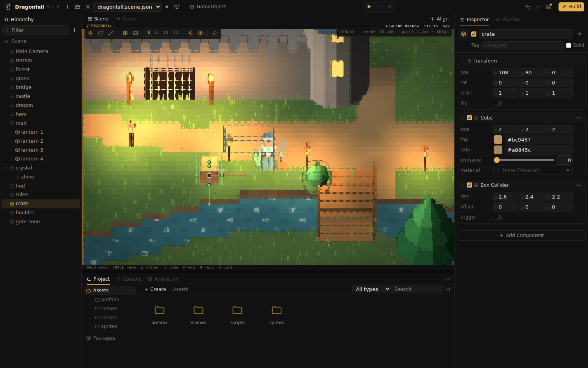

Physics
Colliders give objects a shape on the ground plane with a height range above it; a Rigidbody makes an object fall, slide and bounce off them.
Colliders
| Component | Shape | Settings |
|---|---|---|
| Box Collider | A rectangle that turns with the object's Z rotation. | size (x and y on the ground, z the height), offset, trigger |
| Circle Collider | A circle. | radius, height, offset, trigger |
| Mesh Collider | The footprint of the object's model, its outline seen from above. | trigger |
A collider that is not a trigger blocks the player and rigidbodies. Objects without colliders block with their bounds when marked Solid.
Editing colliders

The Scene view outlines every collider of the scene at its bottom and top: green for solid colliders and blue for triggers, bright on the selected object and dimmed on others. The Gizmos button in the view toolbar hides the outlines.
The colliders of the selected object have square handles:
| Collider | Handles |
|---|---|
| Box Collider | One on each of the four sides: dragging it changes the size along that axis, and the opposite side stays in place. One on top: dragging it up or down changes the height. |
| Circle Collider | One on the side: dragging it sets the radius. One on top: dragging it changes the height. |
| Mesh Collider | None; the shape follows the model. |
Each drag is one undo step. offset and exact values are edited in the Inspector.
Rigidbody
A Rigidbody on an object with a collider moves the object in play mode. Velocity, gravity and collisions work in world space, so a body behaves the same whether its object sits at the top of the hierarchy or under a moved, turned or scaled parent; the ground is at world height 0.
| Property | Meaning |
|---|---|
mass | Heavier bodies push lighter ones further, and forces move them less. |
gravity | The body falls until it reaches the ground or the top of a collider below it. |
drag | How quickly a sliding body slows down. |
bounce | 0 stops at a wall; 1 bounces back at full speed. |
kinematic | The body is moved only by scripts and animation; other bodies still collide with it. |
velocity | Current velocity in world units per second; scripts set it to launch a body. |
Triggers and hooks
A trigger collider reports contacts without blocking, for doors, pickups and zones. Scripts on both objects are notified when a contact begins:
function on_trigger(self, other)
if other.name == "hero" then
play_sound("audio/coin.wav")
self:destroy()
end
end
function on_collision(self, other)
log("bumped into", other.name)
endlocal rb = self:component("rigidbody")
rb:add_force(vec3(0, 0, 9)) -- a jump: velocity changes by force / mass
rb.velocity = vec3(4, 0, 0)